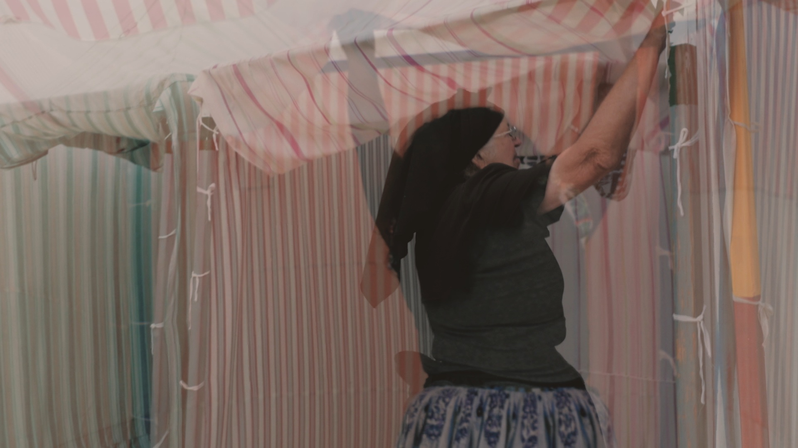

Duration: 4'27''
Format: HD
Synopsis: Humans long for diverse freedoms at any cost, even at the expense of others. The endless thirst includes consumption, technologies, colonialism, war, capitalism, and religions. However, many simply claim their basic human rights in the name of freedom. In Iran, women are fighting for equality, for the right to their bodies and dress code.Palestinians are surviving in the ruins of their bombed country. Also Ukrainians emigrate from their invaded homeland. In the Island of La Réunion where slaves and indentured workers from different cultures were brought, a man is meditating in a park. Peace for some. Joy for a few. The human being defies nature, either by conquering the most hostile territories or building the highest skyscrapers as in New York City. Nature will also look for its freedom.
Like themselves (2021)

Duration: 3'03''
Format: HD
Synopsis: “Like themselves” explores the idea of bodily habitus, of conduct, of generational transmission. In the video, we follow a girl in Nazaré, who has learned the work of a "beach attendant" while we watch an old woman doing the same task. A daily scene which, in its naturalness, reveals essential questions of identity and human nature. The similarity between the 2 characters is such that one could be the youth of the other or vice versa; they seem to form two ages of one single being.
Public wash-house (2020)
Duration: 2'30''
Format: HD
Synopsis: Three generations of women gathered at a public laundry in Porto, Portugal. The eyelids open and close. Memories of a sweet and sensual past.
Summer day (2020)

Duration: 4'14''
Format: HD
Synopsis: One summer day, two girls in a chicken coop observe, discover and take care of the animals.
Game fields (2019)

Music: Pierre Pulisciano
Duration: 3'32''
Format: HD
Synopsis: While two girls cross different lands without any problem, others risk their lives trying to cross them. Lives which politicians play with. The rise of the extreme right has entered the political game. A nightmare which one wants to wake up from and leave the children play in peace, in any land whatsoever.
Bubbles (2018)
Duration: 12'40''
Format: HD
Synopsis: While watching my footage from Morocco, I started playing at the "Rear window", making several "zooms" in one single take filmed at the Square Jemaa el-Fnaa in Marrakech. Little by little, I began to discover thousands of stories in one single clip. The game and voyeurism turned a single scene into infinite possible intrigues. Multiple parallel lives, each in its fragile bubble, are revealed in a short moment. Through the film, we can sort of see how human beings live disconnected from each other and how society is obsessed with capturing moments of life for no other purpose. We are gazing at a show of animals, beings. While editing this video, I had the opportunity to show an unusual view of a banal scene. I imagined, as if the scene had been recorded by a CCTV camera and was a kind of "Big Brother”.
Parallel worlds (2018)
Duration: 7'39''
Format: HD
Synopsis: An imaginary territory where parallel realities, London and Essaouira, overlap and cross. A duplication of events, all occurring at once and interacting. A view of the world unlikely and distant but that paradoxically takes place day by day.
SHADOWS (2017)
Duration: 2'55''
Format: HD
Synopsis:At the harbor in Essaouira, children are diving while fishermen are working, women hanging around, seagulls flying and construction works going on. Past and forthcoming future are mingling, a transformation is being testified. We are transported in a twisted vision of the scene. The black and white images and the sound empower the tension and duality of this environment: game and danger, real and surreal.
FLUVIÀ RIVER (2017)
Duration: 12'48''
Format: Sound and Video 4K
Synopsis: Fluviá River is an audiovisual work by the sound artist Juan Matos Capote and the visual artist Noemi Sjöberg. It was created as part of a residence in Ciudat Jardín, Ventallo in April 2017. This work is the third in a series about the rivers in Catalonia. Using all kinds of devices (hydrophones, contact microphones, waterproof cameras, and drones), the artists capture sound and video field recordings of selected rivers. The territories they prioritize are those in which the complex relations between the natural and the artificial are manifested. The piece is not meant to be a documentary, but clearly subjective, reflecting on the relationships between the territory, the observed and the external intervention of man. Matos and Sjöberg are interested in antropospheric land. They submerge themselves in these environments, armed with their film and sound equipment, seeking to record malleable psycho-geographical material. They explore how man has an effect on the landscape, and how the landscape has an effect on man. They record a multitude of elements, both sonorous and visual, that will be selected to re-present a paradoxical vision of reality. Although it may seem like a documentation, it is, in truth, a specific presentation through the subjective eye and ear.
AS TIME GOES BY (2017)
Duration: 1'42''
Format: Video 4K Triple channel
Synopsis: Three time periods (50's, 2003 and 2017), three screens and one place "Las Arenas de Barcelona". The shopping center, the abandoned place and the bullring. You can choose where to look, or jump from one screen to another and create your own montage. A flashforward or a flashback. As time goes by, the environment and the film support transforms. There are repercussions in our society, changes in our culture. The slow motion moves us to a different time: to fiction/ to the unreal. The video is about death. The projection, reality and future of it.
Summer night (2016)

Duration: 5'34''
Format: Video 4K
Synopsis: At night, on a beach, two little girls. Their faces and gestures dissolved in the lights and sounds will slowly reveal fear, surprise and beauty.
Duration: 10'19''
Format: Video HD
Synopsis: Becoming beauty is a collection of six videos that can be exposed together or separatly. A show of hazardous encounters which is based on investigating the concept of beauty from its sensory perception. Moments of attraction to objects and the environment. An awareness that starts a process, the transformation of a place, persons, things, that becomes beautiful: A boat at dawn, Venice/ A girl discovers the world/ The sun's rays back and forth on the face/ The sea rocking/ A wave of birds creates ephemeral and random forms/ Crossing felds of clouds. Clouds across felds/ The mill spins. In the background, a rooster/ Melody in the street Tunnel/ Songs of mosque, barking/ Snowfakes, architectural eruption/ The earth revolves, endless journey.
Duration: 2'33''
Format: Video HD
Synopsis: The fragile perception of being, captured in this moment of vertigo and disorientation, in which everything seems to move in different spaces / times: clouds, land and train. Endless varieties of the same place, feeling of freedom.
Duration: 50''
Format: Video HD
Synopsis: A breathtaking landscape, a city covered by snow. Architecture made from the eruption of volcanos. A habitat long back in history and still functioning today. A sudden sound of the mosque invades the atmosphere. There is something closed to the subliminal in this short encounter. Time seems undefined. Flashes from history echoes in my mind while the barking reminds me of the present.
Duration: 1'
Format: Video HD
Synopsis: A boat crosses the misty landscape of the Venice lagoon. You could compare it with a painting of romanticism or impressionism trying to capture the sublime or simply the vision of a moment. Human presence and the artifact seem totally absorbed by the ampleness of nature. The notion of space is diffuse, sea and sky form a single environment. Light, composition, depth, line, the video shot has been designed as a painting, on which are added other notions such as time and motion. A picture containing various images and empty moments. The random and manipulable dimension of time enables me to see how objects are organized in space and time. I am talking about beauty, or more exactly its' intuition; instant that the influence of external elements and the disposition of the subject transform the ordinary into the extraordinary; in unique and peculiar.
Duration: 2'37’’
Format: Video HD
Synopsis: The sun's rays back and forth on the face / The sea rocking/ Sound of seagulls fying by/ Smell of the Bosporus Strait / A man falls a sleep. An idyllic boat trip.
Duration: 55’’
Format: Video HD
Synopsis: Futuristic in one way or just functional, considering the climate of the country, a simple cleaving shortcut. Inside, a musician with an unusual repertoire.Tunnel and music, transit passes of life; sound that echoes in the silence, which transforms the space.

Duration: 2'33''
Format: Video HD
Synopsis: Through fields of cloud / Clouds across fields / A little girl discovers the world / A flock of birds creating ephemeral and random forms/ The mill that rotates. Background, a rooster.
LIV (2010)
Duration: 2’32’’
Play
Format: Video SD PAL
Synopsis: The day I felt strongest love and pain Liv was born, my daughter.
Duration: 7’48’’
Format: Video SD PAL Loop
Synopsis: A collaboration with the musician Juan Matos Capote and commissioned by The Art Center La Panera (Lleida, Spain). Audio and Visual field recordings of the Segre River in Lleida (Spain). Exposure and contrast of natural and artificial aspects of this environment.
Duration: 2'28’’
Format: Video SD PAL Loop
Synopsis: A travel in India, surrounded by foreign faces, smells, traditions, landscapes... Having a feeling of not facing reality. Captured impressions.
Duration: 10’
Format: Video SD PAL
Description: This video consists of a 30mn live video and sound performance together with the musician Juan Matos Capote.
Synopsis: Audio and Visual field recordings of the Besòs River in Barcelona (Spain). This is a place where nature and industry meet and mingle.
Duration: 9’48’’
Format: Video SD PAL Double Channel
Synopsis: Animal behaviour (captured and free) in two differents urbans environments in Barcelona, Spain/ Varanasi, India.
Duration: 2’46’’
Format: Video SD PAL
Synopsis: Beijing, the capital of China, a country experiencing an economic boom: a couple meanders in pijamaswhile doing their saturday shopping. With my camera I follow this carefree moment, a suprising encounter in this megalopolis ruled by construction, pollution, assembly line work...
ABUELA (2007)
Duration: 7’01’’
Play
Format: Video SD PAL
Synopsis: My grandmother, 94 years old.
MONGOLIA (2006)
Duration: 12’ 01’’
Play
Format: Video SD PAL
Synopsis: Space – Time - Movement
STOCKHOLM RYSSVIKEN (2005)
Duration: 7’52’’
Play
Format: Video SD PAL
Synopsis: To enter abandoned places with evidence of a past existence stimulates curiosity, strangeness, fear, surprise… The video shows simply a tour inside of two Russian ships abandoned in the bay of of Stockholm. I invite the spectator to submerge into this place, discover it and invent his or her own stories.
Duration: 5’11’’
Format: Video SD PAL
Synopsis: In Iran people live a double life. There is a great gap between the private and the public; to the point where the woman cannot participate in an innocent game in the street. On the other hand, the West always shows a negative view of Islamic countries. A common image is armed conflicts. Editing the video I wanted to accentuate the dualism of war-game, man-woman. Things quickly stop seeming what they are... The veils, the faded image, the balls that explode like missiles... tenderness turns into war, game into oppression, the everyday into the image of a regime... Where is the violence?
TOKYO (2004)

Duration: 9’04’’
Play
Format: Video SD PAL
Synopsis: Concrete, lengthwise, and width wise, step by step/ Neither affirmation, nor negation, everything is grey/ To search for, give and lose one‘s reason kilometres from one’s reference points/ Solitude, fear and vertigo take over the daily life/ The earth beats, a shake changes my reality: life is here.
Duration: 8’14’’
Format: Video SD PAL
Synopsis: To submerge oneself in a universe so familiar and so distant. To live mutations of identity, space and language related to the discovery of one’s own culture. To find the unknown in the known. To dominate the maternal language and to feel a stranger to it. To merge in the environment and feel out of place. Finally to belong only to the present moment. To always be on the edge, and perpetually question «the origin».
Duration: 12’20’’
Format: Video SD PAL
Synopsis: Sometimes the most simple and ordinary things can look strange or unreal. This sensation can develop until one loses references. This is when I find myself on the frontier «between two» (real-unreal). My perception of the world is altered, everything is possible, and everything has to be reconsidered. And it is in this moment when I live a true sensation of liberty.
Noemi Sjoberg © 2024